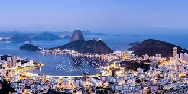
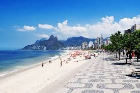

Rio de Janeiro
Bem-vindo à página detalhada do Rio! Aqui você encontrará informações sobre locais para visitar e curiosidades sobre a cidade.
Locais para Visitar
-
 Corcovado -

Cristo Redentor -
 Praia de Copacabana
Curiosidades
O Rio de Janeiro é famoso por seu Carnaval, que é considerado o maior do mundo. Durante o Carnaval, milhões de pessoas.